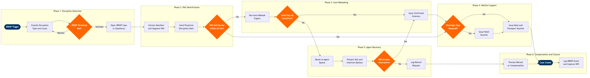

IRROP Passenger Recovery
Customer Experience & Loyalty › Customer Experience Operations · 17 L4 steps · 6 phases · 5 decision gates · Updated 2026-03-18 22:14
📊
Process Flow Diagram (BPMN)

📋
L4 Process Steps
| Step | Step Name | Role / Swim Lane | System | Input | Output | KPI | Dec? | Exc? |
|---|---|---|---|---|---|---|---|---|
Phase 1 1.1 |
Monitor operational alerts for IRROP triggers | Operations Control Analyst | SITA Airport Management System (AMS) | Flight delay or cancellation signals from ops control, ATC, or OCC | IRROP alert ticket created with flight number, delay code, and estimated passenger impact count | IRROP detection-to-alert time ≤15 min from event confirmation | N | N |
| 1.2 | Classify disruption type, cause, and regulatory scope | Operations Control Analyst | Amadeus Altéa PSS | IRROP alert from SITA AMS, IATA delay codes, flight status data | Disruption classification record (delay / cancel / divert), IATA cause code, DOT 14 CFR Part 250 and EC 261/2004 applicability flag | Cause code classification accuracy ≥95%; regulatory flag set within 5 min of classification | N | Y |
| 1.3 | Activate IRROP protocol and notify stakeholders | Customer Recovery Manager | Salesforce Service Cloud | Completed disruption classification record | IRROP case opened in Salesforce with severity tier; airport ops, crew coordination, and customer comms teams alerted | All operational stakeholders notified within 10 min of IRROP classification; case opened with correct priority tier in 100% of activations | Y | N |
Phase 2 2.1 |
Extract affected passenger manifest and PNR records | Customer Recovery Analyst | Amadeus Altéa PSS | Disrupted flight number and departure date from IRROP case | Full passenger manifest with PNR, contact details (email, mobile), fare class, loyalty tier, and connection itinerary flag | Manifest extraction completed within 5 min of IRROP activation; contact data completeness ≥92% of affected PAX | N | Y |
| 2.2 | Segment passengers by recovery priority tier | Customer Recovery Analyst | Amadeus Altéa PSS | Passenger manifest with loyalty tier, fare basis, connection risk flag, and booking channel | Prioritised recovery queue: P1 (elite status and passengers with tight connections), P2 (connecting itineraries), P3 (point-to-point local) | 100% of premium-tier and connection-at-risk passengers classified as P1 before notification dispatch | N | N |
| 2.3 | Send proactive disruption notification with self-serve link | Customer Comms Automation | AWS SNS | Prioritised passenger manifest, disruption details, self-service rebooking portal URL | SMS, email, and app push notification sent per passenger; self-service rebooking link and 60-minute response window communicated | ≥90% of affected PAX notified within 30 min of IRROP activation; self-serve rebooking adoption ≥35% of notified passengers | Y | N |
Phase 3 3.1 |
Run automated rebooking engine against open inventory | Rebooking Automation System | Amadeus Altéa PSS | Prioritised unresolved passenger queue, disrupted flight data, real-time seat inventory | Candidate alternative itineraries generated per passenger prioritised by departure proximity and cabin match | Auto-rebook match rate ≥70% of affected passengers on same-day service; engine execution time ≤3 min per 200-PAX event | N | N |
| 3.2 | Validate alternative itinerary against re-protection policy | Customer Recovery Analyst | Amadeus Altéa PSS | Candidate itineraries, re-protection policy thresholds (same-day ±4 hrs; next-day ±24 hrs) | Policy-compliant itinerary approved for issuance, or case flagged for agent-assisted recovery | Re-protection policy compliance ≥98% of issued auto-rebooks; policy exception review completed within 5 min | Y | Y |
| 3.3 | Issue confirmed rebooking and send updated itinerary | Rebooking Automation System | Amadeus Altéa DCS | Validated replacement itinerary, passenger PNR | Updated PNR with new flight segment, boarding pass where applicable, confirmation notification delivered via AWS SNS | Itinerary confirmation delivered within 5 min of rebooking commit; boarding pass pre-issuance success rate ≥95% | N | Y |
Phase 4 4.1 |
Assess passenger welfare entitlement under applicable regulations | Customer Recovery Analyst | Salesforce Service Cloud | Disruption cause code, flight distance, delay duration, passenger origin and nationality | Entitlement determination per DOT 14 CFR Part 250 and EC 261/2004; overnight flag, meal flag, and transport flag set on IRROP case | Entitlement determination completed within 15 min of IRROP activation; regulatory accuracy ≥99% validated by Customer Relations | Y | Y |
| 4.2 | Issue hotel accommodation vouchers for stranded passengers | Airport Customer Service Agent | SITA Voucher Management | Overnight entitlement flag, passenger count by airport, contracted hotel partner API availability | Hotel voucher codes issued digitally via app, email, or airport kiosk; rooms blocked with hotel partner | Hotel voucher issuance within 45 min of overnight determination; room availability confirmed for ≥90% of entitled passengers | N | Y |
| 4.3 | Distribute meal and ground transportation vouchers | Airport Customer Service Agent | SITA Voucher Management | Delay duration, regulatory entitlement thresholds, terminal and gate location | Meal vouchers and transport vouchers issued digitally or at service desk; voucher redemption records logged in SITA | ≥85% of vouchers issued digitally (app or email); airport service desk queue time ≤20 min during events under 300 PAX | N | N |
Phase 5 5.1 |
Route unresolved cases to contact centre agent queue | Customer Recovery Manager | Salesforce Service Cloud | IRROP cases with no auto-rebook match or passenger rejection of auto-offer | Cases assigned to agent queue with priority tier flag; estimated wait time communicated to passenger via SMS | P1 passengers reached by agent within 5 min; P2 within 15 min; P3 within 30 min of queue entry | N | N |
| 5.2 | Present interline and OAL rebooking options to passenger | Customer Recovery Agent | Sabre GDS | Unresolved IRROP case, active interline e-ticketing agreements, OAL real-time availability | Expanded rebooking options including partner carrier itineraries presented and explained to passenger | Interline option presented within 10 min of agent engagement; OAL rebook success rate ≥60% when invoked | N | Y |
| 5.3 | Confirm passenger decision on rebooking or refund | Customer Recovery Agent | Amadeus Altéa PSS | Alternative itinerary options presented, passenger verbal or digital preference | Accepted rebooking confirmed in Altéa PNR, or refund request logged in Salesforce Service Cloud with case ID | Agent average handling time ≤12 min per case; passenger acceptance rate of presented alternatives ≥75% | Y | Y |
Phase 6 6.1 |
Calculate entitlement and initiate compensation payment | Customer Relations Analyst | SAP S/4HANA Finance (FI/CO) | Confirmed refund or compensation decision, entitlement determination record, original fare paid | Refund or compensation payment initiated in SAP; payment timeline and reference communicated to passenger via Salesforce case | Refund processing completed within 7 business days per DOT requirement; compensation acknowledgement letter issued within 24 hrs of claim receipt | N | Y |
| 6.2 | Log IRROP event data and capture NPS impact | Customer Analytics Analyst | AWS Redshift | Closed IRROP cases from Salesforce, post-event NPS survey responses, cost summary from SAP | IRROP event record with root cause, passenger count, recovery rate, NPS delta, and total recovery cost; stored in data lake for reporting | Post-IRROP NPS survey response rate ≥25%; recovery satisfaction score ≥3.5 out of 5.0; event record published within 48 hrs of case closure | N | N |
📋